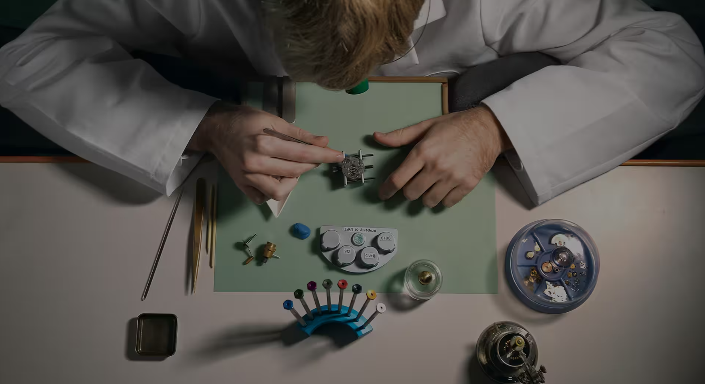

지식을 보존하다
시간, 정밀함의 과학
5세대에 걸쳐 롤렉스 크로노미터의 탄생에 영감을 제공한 정밀함의 과학은 시간과 소재 그리고 이와 관련한 기원과 상호 작용에 대한 과학적 이해에 기반하고 있습니다.
과학 발전의 전성기에 탄생한 롤렉스는 선구적이며 진보된 인류 지식을 통해 시계를 제작합니다.
그러나 롤렉스는 동시에 새로운 세계의 발견과 탐험에서 시계의 정확한 성능을 통해 과학 그 자체를 가능하게 만들었습니다.
롤렉스는 인간의 지식과 독창성, 의지와 기술로 극복하지 못할 과제는 없다는 믿음으로 과학 분야에서 활동하는 개인 및 기관을 지원합니다.

리티츠 시계 학교
정밀함에 대한 교육
미국 내 숙련된 워치메이커가 부족한 상황에 직면하게 되자,
롤렉스는 2001년 최고급 메케니컬 손목시계를 제작할 수 있는 미래의 젊은 전문가를 양성하기 위해 학교를 설립했습니다.